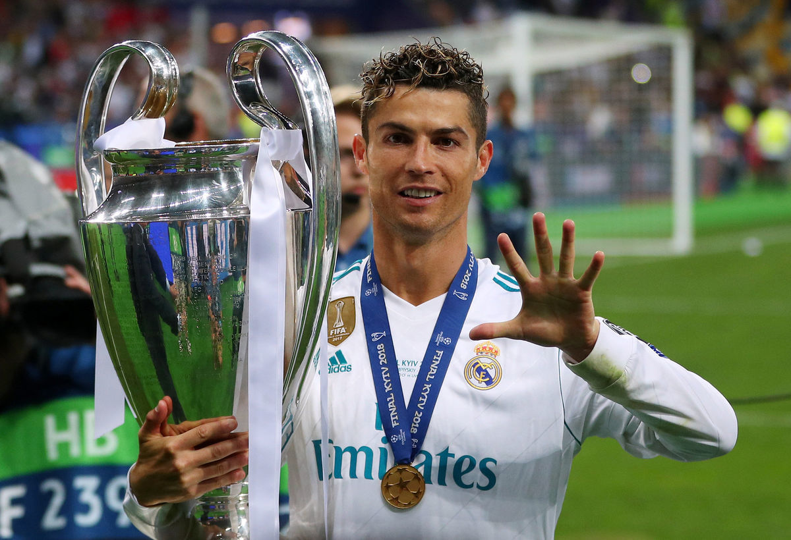
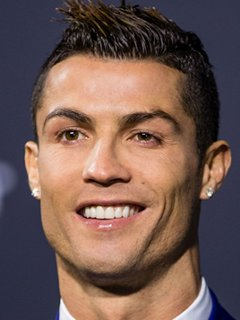
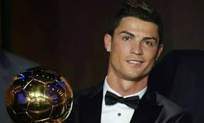
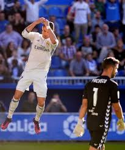

Мій інстаграм

Я ТУТ
Я Роман мені 14 років навчаюсь в Школі №3. Літом полюбляю грати в футбол, кататися на вeлосипеді,
але за комп’ютером я сиджу най частіше та найдовше. Я маю багато друзів та є 3 найліпших.
Понеділок |
Вівтоpок |
Середа |
Четвер |
П’ятниця |
Анг.мова |
Укр.Мова |
Укр.Літиратура |
Фізична Культура |
Алгебра |
Інформатика |
Фізична Культура |
Хімія |
Фізика |
Мистецтво |
Анг.Мова |
Укр.мова |
Укр.Літикатура |
Фізична Культура |
Осн.Здоров’я |
Інформатика |
Геометрія |
Анг.Мова |
Історія |
Мистецтво |
Хочю вам розповісти про Кріштіа́ну Рона́лду нар. 5 лютого 1985, португальський футболіст, нападник італійського клубу «Ювентус» і збірної Португалії, у складі якої є капітаном, а також рекордсменом за кількістю ігор і забитих голів. П'ятиразовий володар Золотого м'яча 2008, 2013, 2014, 2016 та 2017 років.Чотириразовий володар Золотого бутса УЄФА 2008, 2011, 2014 та 2015 років. Фіналіст Євро-2004 у складі збірної Португалії. Визнаний найкращим молодим гравцем чемпіонату Європи 2004 року.
   